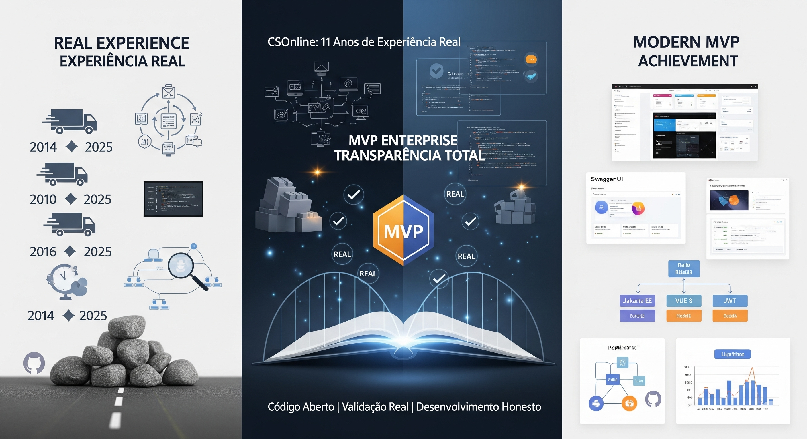

Csonline - Final - Gestão Cd Da Experiência Real Ao Mvp Enterprise Moderno
CSOnline - Gestão CD: MVP Enterprise Completo e Lições de 11 Anos
Artigo Final para LinkedIn - Agosto 2025

CSOnline - Gestão CD: Da Experiência Real ao MVP Enterprise Moderno
A Diferença Entre Promessas e Resultados Concretos
Em um mercado saturado de "especialistas de 3 meses" que prometem revoluções com protótipos superficiais, o CSOnline representa algo diferente: 11 anos de experiência real transformados em um MVP enterprise funcional através de inteligência artificial.
Nossa Jornada: Transparência Total
A Base Real (2014-2024)
-
Sistema JSF operacional atendendo empresa real de delivery
-
Regras de negócio validadas por década de operação
-
Problemas reais resolvidos no dia a dia empresarial
-
Código público no GitHub desde o início
O Impasse Honesto (2024)
-
Sistema funcionalmente completo mas tecnicamente ultrapassado
-
Falta de recursos humanos para modernização
-
Projeto estagnado aguardando colaboradores
-
Nenhuma promessa vazia - apenas realidade crua
A Transformação com IA (2025)
-
Parceria estratégica com inteligência artificial
-
4 marcos técnicos documentados publicamente
-
Código aberto - tudo verificável no GitHub
-
Resultados mensuráveis em cada etapa
CSOnline MVP: O Que Temos de Concreto
Stack Enterprise Validado
Frontend: Vue 3 SPA (7 módulos CRUD completos)
Backend: Jakarta EE 10 + JPA
Segurança: JWT Bearer Token (100% endpoints protegidos)
Documentação: Swagger UI (35+ endpoints mapeados)
Infraestrutura: WildFly 31 + HSQLDB
Testes: 20 testes de segurança automatizados
Funcionalidades Operacionais
-
Gestão de Usuários - CRUD completo com autenticação
-
Gestão de Entregadores - Cadastro e controle
-
Centros de Distribuição - Administração empresarial
-
Sistema de Entregas - Logística integrada
-
Gestão de Equipes - Team management
-
Sistema de Preços - CRUD + consultas
-
Comunicação SMS/WhatsApp - Mensagens automatizadas
-
Health Check - Monitoramento de sistema
Evidências Técnicas Verificáveis
-
URL Demo:
http://localhost:8080/csonline/ -
Swagger UI:
http://localhost:8080/csonline/swagger-ui/ -
Repositório GitHub: Público e verificável
-
Testes Automatizados: 20/20 aprovados
-
Métricas de Performance: \< 100ms resposta
O Que NÃO Prometemos (Honestidade Profissional)
Não Somos "Especialistas de 3 Meses"
-
Não prometemos revoluções impossíveis
-
Não temos apenas protótipos vazios
-
Não usamos termos grandiosos sem substância
-
Não evitamos mostrar código real
-
Não vendemos sonhos irrealizáveis
Somos Transparentes Sobre Limitações
-
É um MVP - não um produto final
-
Precisa de validação por usuários reais
-
Requer homologação do público-alvo
-
Tem limitações técnicas conhecidas
-
Necessita refinamento baseado em feedback
Nossa Vantagem: Experiência Real
11 Anos de Erros e Aprendizados
"Nossa vantagem está nos erros que já cometemos! Os especialistas de 3 meses nunca erram, vão direto ao alvo. Nós não somos especiais. Somos simplesmente pessoas que trabalham, há muito tempo, e que o tempo já perdemos, e já erramos e sabemos disso."
O Que Sabemos Que Funciona
-
Regras de negócio validadas por operação real
-
Arquitetura testada em ambiente produtivo
-
Limitações conhecidas por experiência prática
-
Pontos de falha identificados e documentados
-
Soluções comprovadas para problemas reais
O Que Sabemos Que NÃO Funciona
-
90 tentativas falharam - mas encontramos as 10 que funcionam
-
Conhecemos os limites da tecnologia atual
-
Sabemos explicar por que certas coisas falham
-
Temos cicatrizes de projetos reais
MVP vs. Produto Final: Expectativas Realistas
CSOnline Hoje (MVP)
-
Funcionalidades core implementadas
-
Arquitetura sólida estabelecida
-
Segurança robusta validada
-
Documentação completa disponível
-
Base técnica para evolução
Próximos Passos para Produção
- Validação de Usuário - Feedback do público-alvo real
- Homologação Empresarial - Testes em ambiente corporativo
- Refinamento UX/UI - Baseado em uso prático
- Otimizações de Performance - Dados reais de carga
- Integrações Específicas - Conforme necessidades validadas
Convite à Comunidade: Validação Real
Buscamos Validadores Sérios
-
Empresas de delivery interessadas em testar
-
Gestores de CD com problemas reais
-
Desenvolvedores que querem contribuir
-
Usuários finais dispostos a dar feedback honesto
O Que Oferecemos
-
Código aberto - GitHub público
-
Documentação completa - Swagger UI interativo
-
Suporte técnico - Experiência de 11 anos
-
Evolução colaborativa - Desenvolvimento transparente
O Que Precisamos
-
Feedback real de usuários potenciais
-
Casos de uso específicos para validar
-
Críticas construtivas para melhorar
-
Colaboradores interessados em evoluir
Lições de Uma Década: Substância Sobre Marketing
Experiência Real Supera Hype
Aprendemos que experiência consolidada + tecnologia moderna + transparência total vale mais que promessas vazias + marketing agressivo + protótipos superficiais.
IA Como Ferramenta, Não Milagre
A inteligência artificial foi nossa força de trabalho para superar limitações de recursos, não uma solução mágica para problemas inexistentes.
Código Fala Mais Que Palavras
Todo nosso trabalho está públicamente verificável. Não prometemos - mostramos.
CSOnline - Gestão CD: MVP Pronto para Validação
Experiência real de 11 anos + Stack enterprise moderna + Desenvolvimento assistido por IA + Transparência total = Um MVP sólido aguardando validação do mercado.
Acesse e Teste: [GitHub Repository] | [Demo Local] | [Swagger UI Documentation]
Convite à Ação
Empresários: Teste nosso MVP em suas operações reais
Desenvolvedores: Contribuam com nosso projeto open-source
Usuários: Compartilhem feedback honesto sobre funcionalidades
Céticos: Verifiquem nosso código e tirem suas próprias conclusões
Não vendemos sonhos. Construímos soluções. Com transparência.
EnterpriseDevelopment #MVP #RealExperience #OpenSource #TransparenciaTecnologica #DesenvolvimentoReal #JavakartaEE #Vue3 #LogisticsTech #SoftwareHonesto
Repositório GitHub: https://github.com/chmulato/csonline